Introdução ao desenvolvimento de jogos com HTML5
INFOESTE 2013
Instrutores:
Heberth Jorge Feres / @fereshj
Victor Hugo de Paiva Gonçales / @victorvhpg
Introdução
O HTML5 permite desenvolvimento de jogos e aplicações de forma acessível, livre e multiplataforma. Presente em diversos dispositivos como Tablets, Smartphones, Smart Tvs e etc, é uma tecnologia livre, de fácil aprendizado, possui incentivos pelas grandes empresas de tecnologia e é tudo gratuito e padronizado. Graças aos recursos oferecidos pelo HTML5, atualmente podemos criar jogos multiplataforma com muitos recursos sem a necessidade de plugins. Neste curso será apresentado conceitos e técnicas básicas de desenvolvimento de jogos 2D utilizando HTML5. Após os conceitos será implementado um exemplo básico de jogo 2D.
Conteúdo Programático
- HTML5
- JavaScript
- O elemento Canvas
- O elemento Áudio
- Local Storage
- Entrada de usuário
- Jogos. Técnicas e Conceitos
- Sprite
- Animação
- Colisão
- Cenário
- Frames Por Segundo
- Movimentação Baseada em FPS
- Game Loop
- Exemplos de jogos desenvolvidos com HTML5
HTML5
O HTML é uma linguagem de marcação para apresentação de conteúdo WEB.Atualmente o HTML se encontra na versão 5, nela foi adicionado mais tags semánticas(header,nav,footer, section e etc),e outras novas tags, vários recursos interessantes que antes só era possível com ajuda de plugins proprietários. Estes recursos implementam suporte à conteúdo multimídia (áudio e vídeo), manipulação de imagens bitmap(canvas) e imagens vetoriais (SVG), aplimoramento offline, Websockets entre outras coisas.
Estrutura básica
<!doctype html>
<html lang="pt-br">
<head>
<meta charset="utf-8">
<title>teste b</title>
</head>
<body> olá mundo </body>
</html>
JavaScript
Javascript é uma linguagem de programação de tipagem dinâmica baseado em protótipos, originalmente implementada para navegadores web, mas atualmente está vários ambientes por exemplo: servidores(Node.js), sistemas Operacionais(Firefox OS), entre outros. Nos navegadores o javascript manipula os elementos HTML usando DOM.
O elemento Canvas
O canvas é uma tela bitmap que permite manipulação de imagens, gráficos, retas, textos.Um canvas é um retângulo em sua página no qual você pode utilizar javascript para desenhar o que quizer.
Canvas
Compatibilidade
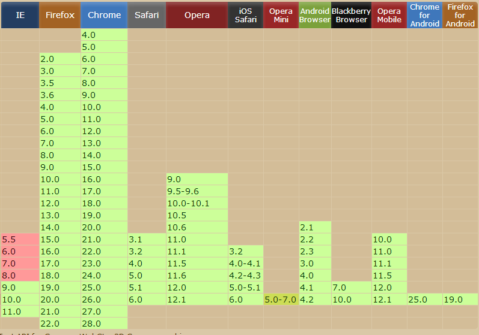Sistemas de Coordenadas
As coordenadas de um canvas começam em x=0, y=0 no canto superior esquerdo, e aumenta(em pixels) horizontalmente no eixo x e verticalmente no eixo y
Adicionando o Canvas na página
Para adicionar o canvas use a tag <canvas>
Desenhando no canvas
Para começar a desenhar nos devemos usar o contexto do canvas que é obtido desta forma:
var meuCanvas = document.querySelector("#meuCanvas");
var ctx = meuCanvas.getContext("2d");
Desenhando no canvas
linhas
ctx.beginPath();
ctx.moveTo(20,20);
ctx.lineTo(20,100);
ctx.lineTo(70,100);
ctx.closePath();
ctx.stroke();
Desenhando no canvas
Formas
ctx.rect(20,20,150,100);
ctx.fillStyle="red";
ctx.strokeStyle = "yellow";
ctx.lineWidth=5;
ctx.fill();
ctx.stroke();
Desenhando no canvas
Formas
var raio = 50;
var x =100;
var y = 75;
var anguloInicial = (Math.PI/180)*0;
var anguloFinal = (Math.PI/180)*270;
ctx.arc(x,y,raio,anguloInicial,anguloFinal) ;
ctx.stroke();
Desenhando no canvas
// drawImage - Desenha uma imagem na tela
var imgDOM = new Image();
imgDOM.onload = function(){
ctx.drawImage(imgDOM, dx, dy);
ctx.drawImage(imgDOM, dx, dy, dw, dh);
ctx.drawImage(imgDOM, sx, sy, sw, sh, dx, dy, dw, dh);
};
imgDOM.src = 'imagem.jpg';

Desenhando no canvas
| Método | Descrição |
|---|---|
save() | Salva o estado(estilos e transformações) do contexto em uma pilha. |
restore() | Volta o estado do contexto da pilha. |
strokeRect() | Desenha um retângulo |
fillRect() | Preenche um retângulo. |
clearRect() | Limpa um retângulo |
fillText( ) | Desenha um texto |
rotate( ) | Rotaciona o sistema de coordenadas. |
translate() | Converte o sistema de coordenadas. (define onde será o 0,0 do canvas) |
Referências Canvas
O elemento Áudio
Para usar o audio use a tag <audio>
<audio src="audio.ogg"></audio>
Métodos
| canPlayType() | Verifica se o navegador suporta o formato de audio |
| load() | Recarrega o elemento audio |
| play() | Inicia o audio |
| pause() | Pausa o audio |
Atributos
| autoplay | O som inicia após carregamento |
| loop | som fica em loop |
| controls | mostra os controle |
| preload | inicia carregamento |
Compatibilidade
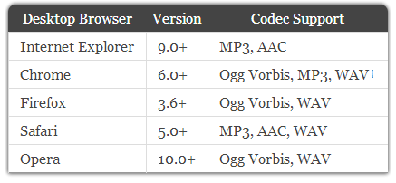Referências Audio
Local Storage
Serve para armazenar dados no navegador, o localStorage fica disponível não expira ele só é removido via código ou se o cliente excluir .
//guardar
localStorage.setItem("pontos" , 123);
//recuperar
localStorage.getItem("pontos");///
Entrada de usuário
Com javascript podemos capturar eventos de entrada do usuário, estes eventos podem ser de teclado, mouse e touch.
captura de tecla
//e.which é o codigo da tecla
document.addEventListener("keydown",function(e){
console.log(e.type + e.which) ;
},false);
document.addEventListener("keyup",function(e){
console.log(e.type + e.which) ;
},false);
document.addEventListener("keypress",function(e){
console.log(e.type + e.which) ;
},false);
Entrada de usuário
captura do mouse
document.addEventListener("NOME_DO_EVENTO",function(e){
//coordernada x em relazação ao documento inteiro
console.log(e.pageX) ;
//coordernada x em relazação janela do browser
console.log(e.clientX) ;
//coordernada x em relazação a tela (monitor)
console.log(e.screenX) ;
},false);
//NOME_DO_EVENTO->
//mousedown,mouseup,mousemove
//mouseover,mouseout,click,dblclick
Entrada de usuário
captura de touch
document.addEventListener("NOME_DO_EVENTO",function(e){
var coordenada = e.touches[0];
console.log(coordenada.pageX) ;
},false);
//NOME_DO_EVENTO->
//touchstart - equivalente mousedown
//touchend - equivalente mouseup
//touchmove - equivalente mousemove
Jogos - Conceitos e Técnicas
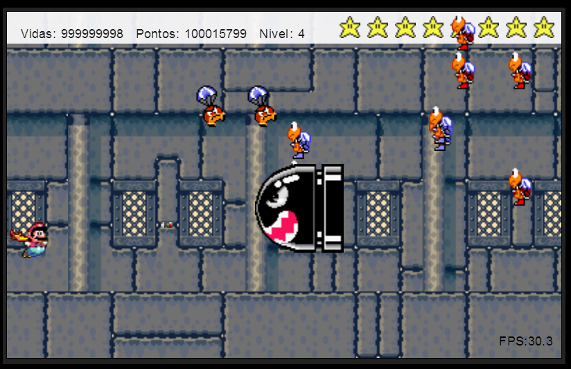Sprite
O que são?
Sprites são os elementos gráficos que serão exibidos na tela do jogo. Esses elementos representam personagens, inimigos, itens, cenarios, etc...
Folha de Sprites
A folha de sprites é uma imagem contendo todas ou um conjunto de sprites.
Folha de Sprites
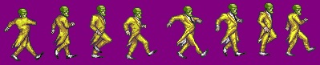Esta imagem é uma folha de sprites, ela representa o conjunto de sprites necessárias para representar visualmente o caminhar do personagem (O Máscara).
Folha de Sprites
Sprites prontas http://spriters-resource.com/snes/
Carregador de recursos
Um jogo só pode iniciar quando todos os recursos (imagens, audio, e etc) forem carregados, pois caso você tente usar um recurso que ainda não está no cache do navegador ocorrerá um erro, por exemplo se você tentar desenhar uma imagem no canvas que ainda não foi carregada ocorrerá um erro. O ideal é você ter o controle de tudo o que está sendo carregado para que você possa criar algum tipo de barra de progresso.
Carregador de recursos
//para carregar imagem
var img = new Image();
img.onload = function(){
//carregou
};
img.src="imagem.jpg"
//para carregar audio
var audio = document.createElement("audio");
audio.preload = "auto";
audio.addEventListener("canplaythrough", function() {
//carregou
}, false);
audio.src = "audio.ogg";
audio.load();
Efeito espelho
As vezes queremos que uma sprite seja desenhanda no lado oposto ou seja espelhada, por exemplo personagem andando para
frente olha para direita e quando esta andando para o lado oposto ele deve estar olhando para esquerda.Ao invés de
criarmos uma outra imagem sprite podemos espelhar a imagem via código com o método scale() passando escala -1 e ajustando o sistema
de coordenada com o método translate()
Efeito espelho
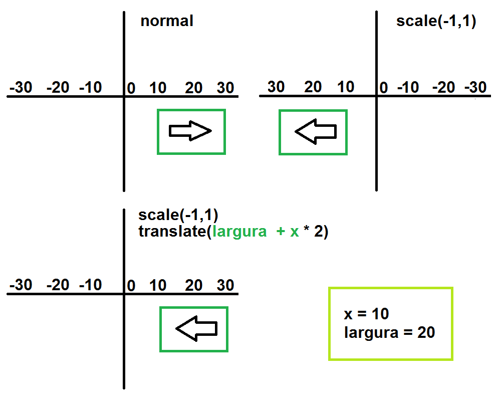
ctx.translate( largura + (x * 2), 0);
ctx.scale(-1, 1);
[ver exemplo]
Animação
Animação
Uma animação é uma ilusão resultante da troca de imagens em uma velocidade pré determinada. Essa velocidade é representada por FPS (Frames Por Segundos) ou quantas vezes a imagem (canvas) será redensenhada em um segundo. Para um jogo, considera-se aceitavel uma taxa entre 30 e 60 fps.
Animação
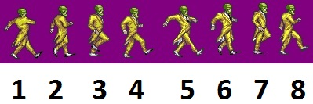Para animar o caminhar de nosso personagem, devemos fazer as trocas de frames na seguinte sequência: 3, 4, 5, 6, 7, 8, 1, 2
Animação
Vimos que nossa folha de sprites é um conjunto de imagens, e que em cada troca deve ser exibido uma imagem por vez. Para isso iremos "mapear" nossa folha separando cada imagem.
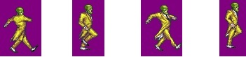Como fazer isso?
Animação
Vamos dizer que cada sprite é um frame, para pegar um frame precisamos saber a posíção x e y na folha de sprites e a largura e altura do frame:
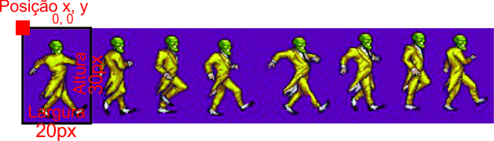Temos então assim: x= 0, y= 0, largura= 20 e altura= 30
Animação
Nosso mapeamento ficará da seginte forma:
frames[0].x= 0;
frames[0].y= 0;
frames[0].largura= 20;
frames[0].altura= 30;
frames[1].x= 20;
frames[1].y= 30;
frames[1].largura= 20;
frames[1].altura= 30;
...
Animação
Tendo a folha de sprites mapeada, a cada troca de frames saberemos qual posição da folha renderizar no canvas com o método drawImage():
ctx.drawImage(folhaSprites, frames[indiceAtual].x, frames[indiceAtual].y,
frames[indiceAtual].largura, farmes[indiceAtual].altura,
200, 200);
Animação de Sprite
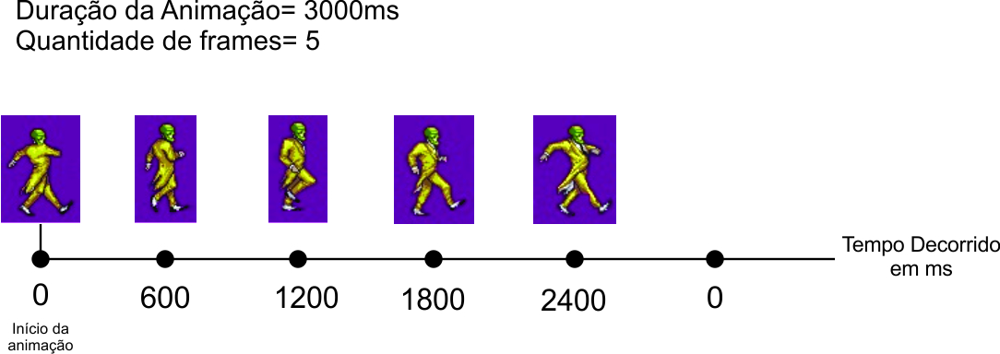Comportamentos
Cada personagem(sprite) pode assumir um comportamento diferente, por exemplo o personagem pode, pular, cair, voar e etc.O comportamento que deve decidir qual frame deve desenhar, controlar o tempo da animação e poder alterar algumas caracteristicas(direção, velocidade, gravidade) da sprite.
Colisão
Colisão
Uma colisão acontece quando um objeto "tromba" em outro. Pensando em jogos, a colisão acontece quando objeto está na mesma posição x e y ocupada pelo outro objeto. Esse conceito é importante, talvez é o mais importante no funcionamento de um jogo.
Colisão
Quando acontece uma colisão em um jogo?
- Quando o Mario "encosta" em um inimigo. Ele morre.
- Quando o Mario "encosta" em um cogumelo. Ele cresce.
- Quando o Mario "encosta" numa parede. Ele é impedido de andar.
Colisão
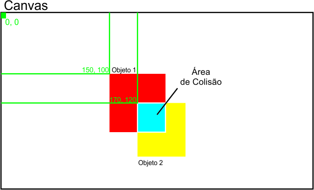Cenário
Cenário
Uma das técnicas para construir cenários é a técnica "Tile Maps", nela você tem uma imagem contendo todos as 'celulas' que o seu cenário pode ter. Logo para construir o seu cenário você deve identificar todos estas células e montar seu cenário como se fosse um quebra-cabeça. Para construir podemos fazer o seguinte: construimos uma matriz que será o nosso cenário, cada indice desta matriz irá conter a identificação da 'célula'.
Cenário
Exemplo de uma imagem 'tile map'
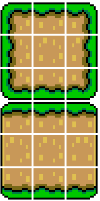Cenário
Identificando as 'células'
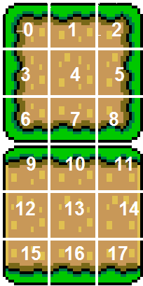Cenário
Montando o cenário
//id da célula -1 não desenha
matCenario = [
[-1, -1, -1, -1, -1, -1, -1, -1, -1, -1],
[-1, -1, -1, -1, -1, -1, -1, -1, -1, -1],
[-1, -1, -1, -1, -1, 9, 10, 11, -1, -1],
[-1, -1, -1, -1, -1, 12, 13, 14, -1, -1],
[-1, -1, -1, -1, -1, 12, 13, 14, -1, -1],
[-1, -1, -1, -1, -1, 12, 13, 14, -1, -1],
[10, 10, 10, 10, 10, 10, 10, 10, 10, 10]
];requestAnimationFrame
requestAnimationFrame é um método (temporizador) mais eficiente para usar quando deseja-se fazer alguma animação pois quem decide o tempo quando ele executará é próprio navegador evitando ciclos de CPU desperdiçado, alé disso ele só é executado quando o aba do navegador está ativa evitando processos desnecessários.
requestAnimationFrame(function(){
//será executado apenas uma vez
});
requestAnimationFrame
Compatibilidade
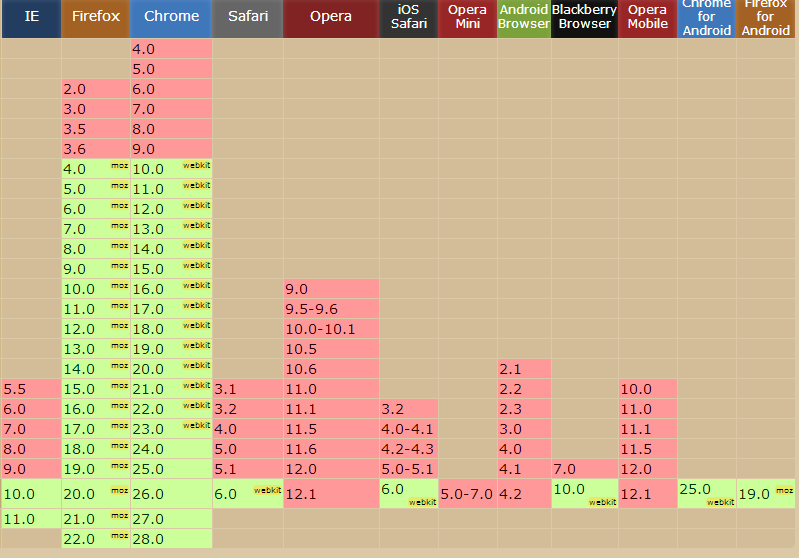requestAnimationFrame
Compatibilidade
window.requestAnimationFrame = (function() {
return window.requestAnimationFrame ||
window.webkitRequestAnimationFrame ||
window.mozRequestAnimationFrame ||
window.oRequestAnimationFrame ||
window.msRequestAnimationFrame ||
function(callback) {
window.setTimeout(function() {
callback(+new Date);
}, 1000 / 60);
};
})();
FPS
Frames por Segundo
FPS é a quandidade de vezes em que a tela foi desenhada em um segundo.Em um jogo o ideal é ter uma taxa entre 30 à 60 fps.
//considerando tempoDecorridoDesdeUltimoLoop
// sendo o tempo desde o ultimo loop
// estimativa aproximada:
// se estiver executando a cada
//loop o tempo de 'tempoDecorridoDesdeUltimoLoop'
// então ele executara 1000/tempoDecorridoDesdeUltimoLoop
//vezes em um segundo
// Por exemplo:
// se a cada loop demora 16ms
//então em 1 segundo (1000ms) ele executara 60 vezes
// x = 1000/16 //quantas vezes
// durante um segundo executando cada loop a 16ms
// x = 60 fps
//----------------------------------------------------
var fps = (1000 / tempoDecorridoDesdeUltimoLoop);
Movimentação Baseada em FPS
Um carro movimenta-se em quilometros por hora, em canvas o movimento basea-se em pixels por segundo, logo temos:
FPS; // valor adquirida conforme explicado no slide anterior
var velocidade= 100; //pixel por segundo
var movimento= velocidade / FPS;
Game Loop
O Game Loop é responsável pelo funcionamento do jogo. Este loop é executado consiste de uma sequência:
- Ler entrada do usuário
- Atualizar entidades
- Aplicar a lógica
- Desenha o jogo
Exemplos de Jogos desenvolvidos com HTML5
Super Mario Míssil Attack
Super Mario Míssil AttackJogo da Memória
https://apps.facebook.com/jogo_memoria/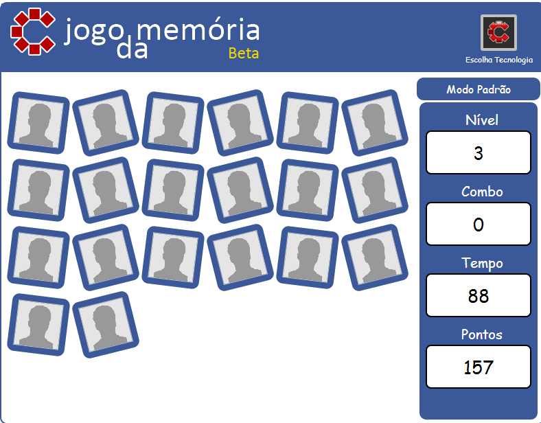
Emberwind
Emberwind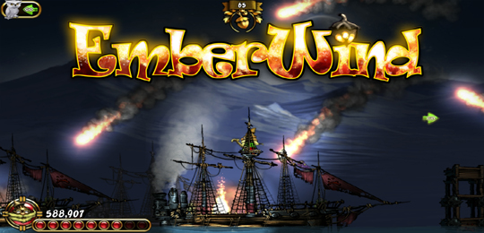
BananaBread
BananaBread